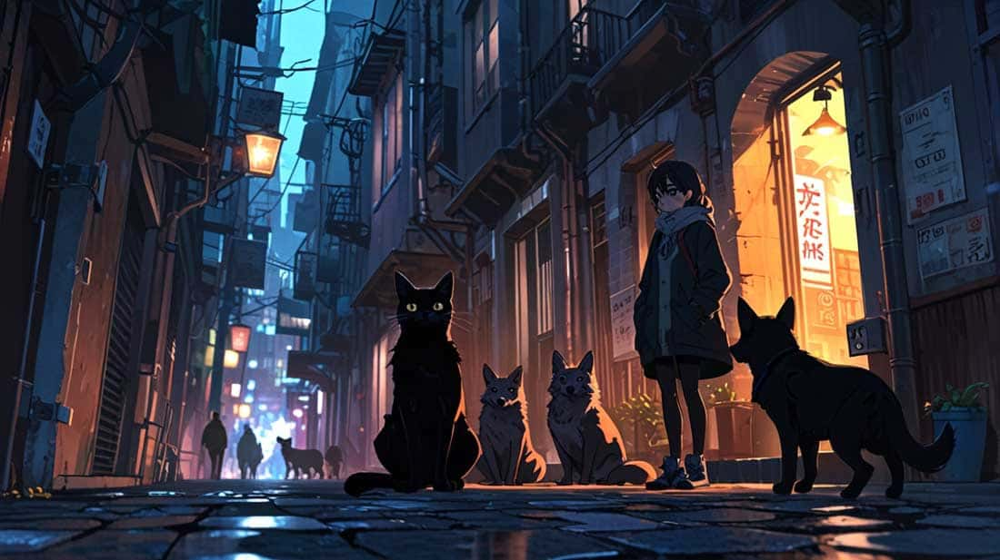
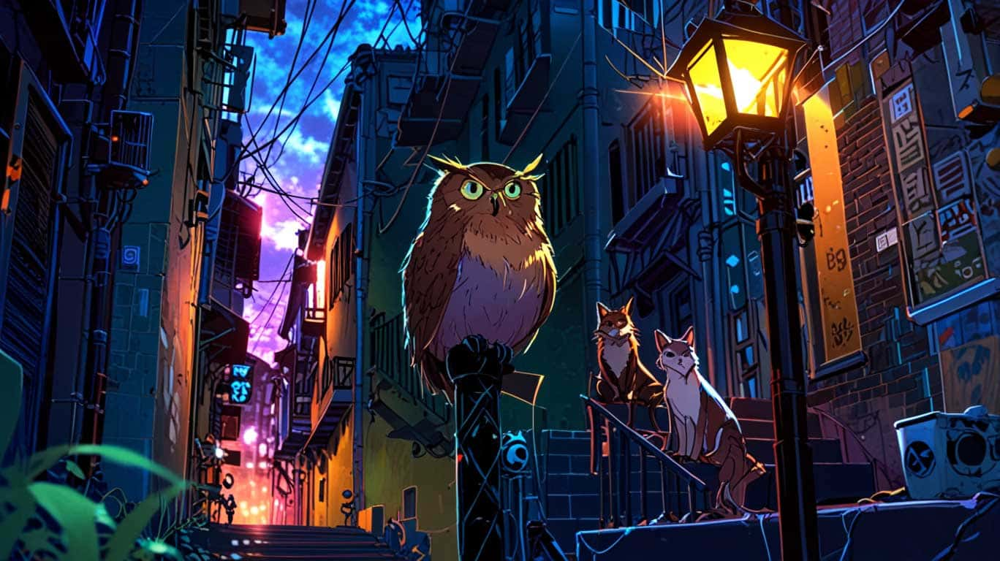
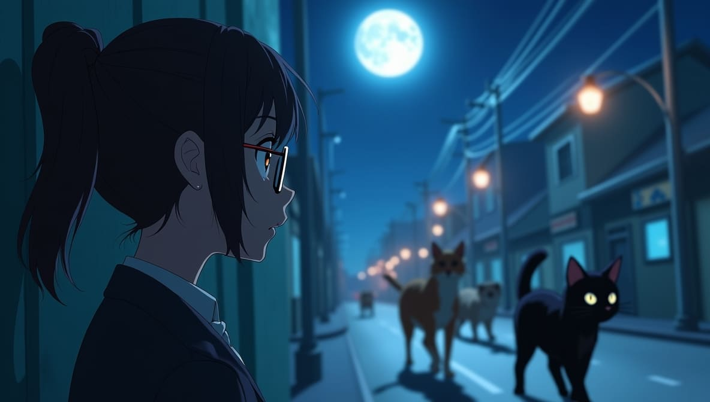

🐾 Shadow: "The Midnight Crew"
En el tranquilo pueblo de Willowbrook, Shadow no era un gato negro común. Durante el día, se recostaba perezosamente en el alféizar soleado de su dueña, Emily, una bibliotecaria de buen corazón que lo adoraba. Pero por la noche, Shadow se transformaba en el líder de una alianza secreta de animales conocida como "The Midnight Crew" (La Pandilla de la Medianoche).
The Midnight Crew era un grupo de animales callejeros y abandonados, cada uno con una habilidad única. Estaba Luna, una zorra rápida y astuta; Rusty, un mapache experto en tecnología que podía hackear sistemas de seguridad; y Piper, un búho viejo y sabio que servía como estratega del grupo. Juntos, recorrían las calles bajo el manto de la oscuridad, ayudando a mascotas perdidas a encontrar el camino de regreso a casa.
La doble vida de Shadow comenzó una noche fatídica cuando se encontró con un cachorro perdido atrapado en una alcantarilla. Usando su agilidad y rapidez mental, Shadow liberó al cachorro y se dio cuenta de que podía hacer más para ayudar a otros animales necesitados. Con el tiempo, su reputación creció, y pronto, tanto mascotas como animales callejeros susurraban su nombre con asombro.
Pero el secreto de Shadow no podía permanecer oculto para siempre. Una tarde, Emily notó que su gato se escabullía por la puerta para gatos, su pelaje negro y brillante reflejando la luz de la luna. Curiosa, decidió seguirlo. Para su asombro, descubrió a Shadow liderando a The Midnight Crew por el pueblo, guiando a un gatito perdido de regreso a su hogar.
El corazón de Emily se llenó de orgullo y asombro. En lugar de confrontar a Shadow, decidió apoyar su misión. Comenzó a dejar suministros—comida, mantas e incluso un pequeño botiquín de primeros auxilios—para que The Midnight Crew los usara. Shadow, a su vez, le dejaba pequeños tokens de gratitud: un botón brillante, una pluma o una flor.
Con el tiempo, el vínculo entre Emily y Shadow se fortaleció. Incluso comenzó a ayudar a The Midnight Crew difundiendo información sobre mascotas perdidas y organizando esfuerzos comunitarios para apoyar a los animales callejeros. La doble vida de Shadow ya no era un secreto, sino una fuente de inspiración para todo el pueblo.
Y así, Shadow, el gato negro, continuó sus aventuras, no solo como un héroe para las mascotas perdidas, sino como un símbolo de esperanza y unidad en Willowbrook. Durante el día, era el amado compañero de Emily; por la noche, era el valiente líder de The Midnight Crew, demostrando que incluso las criaturas más pequeñas pueden hacer una gran diferencia.